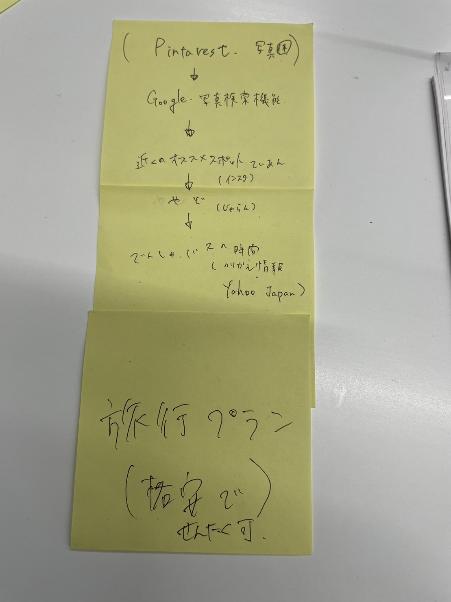

今回グループで考えたのはピンタレストの画像からおおよその旅行プランを立てるというものだ。私は特に乗り換え案内について考えた。
コードはデザイン演習のSAの方の知識をお借りした。
- import japanize_kivy
- import urllib.parse
- import kivy
- from kivy.app import App
- from kivy.uix.boxlayout import BoxLayout
- from kivy.uix.textinput import TextInput
- from kivy.uix.button import Button
- import webbrowser
- kivy.require('1.11.1')
- class LinkOpenerApp(App):
- def __init__(self, **kwargs):
- super().__init__(**kwargs)
- self.links = []
- def build(self):
- self.layout = BoxLayout(orientation='vertical')
- self.input_text1 = TextInput(
- hint_text='出発駅 ')
- self.input_text2= TextInput(
- hint_text='到着駅')
- self.add_button = Button(text='create')
- self.add_button.bind(on_press=self.add_link)
- self.layout.add_widget(self.input_text1)
- self.layout.add_widget(self.input_text2)
- self.layout.add_widget(self.add_button)
-
- return self.layout
- def add_link(self, instance):
-
- # エンコードされたキーワードとアカウント名を使用してURLを生成
- search_url =f'https://transit.yahoo.co.jp/search/result?from={self.input_text1}&to={self.input_text2}&fromgid=&togid=&flatlon=%2C%2C23408&tlatlon=%2C%2C23404&via=&viacode=&y=2023&m=11&d=06&hh=22&m1=2&m2=9&type=1&ticket=ic&expkind=1&userpass=1&ws=3&s=0&al=1&shin=1&ex=1&hb=1&lb=1&sr=0'
- webbrowser.open(search_url)
- if __name__ == '__main__':
- LinkOpenerApp().run()
yahoo!乗り換え案内を出発地、到着地を指定することですぐに使えるようにしたかったが、場所の名前が変わるとURLも変化するので、指定の書式をうまく盛り込むことができなかった。
参考にさせていただいたサイト
また、上記サイトも参考にさせていただいた。スクレイピングという行為の仕方には気を付けたい。
私とは違う方法でグループメンバーが作ってくれた。
HANAさん
以下はグループのまとめ
- import japanize_kivy
- import kivy
- from kivy.app import App
- from kivy.uix.boxlayout import BoxLayout
- from kivy.uix.textinput import TextInput
- from kivy.uix.button import Button
- import requests
- # 既存のコードの上部に以下のインポート文を追加します
- from kivy.uix.label import Label
- class TransportationApp(App):
- def build(self):
- layout = BoxLayout(orientation='vertical')
- self.result_label = Label(text='', size_hint_y=None, height=44)
- layout.add_widget(self.result_label)
- return layout
- kivy.require('1.11.1')
- class TransportationApp(App):
- def build(self):
- layout = BoxLayout(orientation='vertical')
- self.destination_input = TextInput(hint_text='目的地を入力')
- search_button = Button(text='交通情報を検索', on_press=self.search_transportation)
- self.result_label = Label(text='', size_hint_y=None, height=44)
- layout.add_widget(self.destination_input)
- layout.add_widget(search_button)
- layout.add_widget(self.result_label)
- return layout
- def search_transportation(self, instance):
- destination = self.destination_input.text.strip()
- if destination:
- # ヤフージャパンのAPIキーを設定
- api_key = 'YOUR_YAHOO_JAPAN_API_KEY'
- # APIエンドポイント
- api_url = f'https://map.yahooapis.jp/direction/v1/transit?appid={api_key}&from=&to={destination}&format=json'
- # APIリクエストを送信
- response = requests.get(api_url)
- if response.status_code == 200:
- # レスポンスを処理し、結果を取得
- transportation_info = response.json()
- import japanize_kivy
- import urllib.parse
- import kivy
- from kivy.app import App
- from kivy.uix.boxlayout import BoxLayout
- from kivy.uix.textinput import TextInput
- from kivy.uix.button import Button
- import webbrowser
- kivy.require('1.11.1')
- class HashTagSearchApp(App):
- def __init__(self, **kwargs):
- super().__init__(**kwargs)
- self.hashtags = []
- def build(self):
- self.layout = BoxLayout(orientation='vertical')
- self.input_text = TextInput(hint_text='enter a hashtag without "#"')
- self.add_button = Button(text='search')
- self.add_button.bind(on_press=self.search_hashtag)
- self.layout.add_widget(self.input_text)
- self.layout.add_widget(self.add_button)
- return self.layout
-
- def search_hashtag(self, instance):
- hashtag = self.input_text.text.strip()
- if hashtag:
- self.hashtags.append(hashtag)
- hashtag = urllib.parse.quote(hashtag) # キーワードをエンコード
- search_url = f'https://www.instagram.com/explore/tags/{hashtag}/'
- webbrowser.open(search_url)
- # ウィンドウを閉じないようにするためのカスタムロジックを追加
- pass
- if __name__ == '__main__':
- app = HashTagSearchApp()
- app.run()
- import japanize_kivy
- import kivy
- from kivy.app import App
- from kivy.uix.boxlayout import BoxLayout
- from kivy.uix.textinput import TextInput
- from kivy.uix.button import Button
- import requests
- from kivy.uix.label import Label
- class TransportationApp(App):
- def build(self):
- layout = BoxLayout(orientation='vertical')
- self.result_label = Label(text='', size_hint_y=None, height=44)
- layout.add_widget(self.result_label)
- return layout
- kivy.require('1.11.1')
- class TransportationApp(App):
- def build(self):
- layout = BoxLayout(orientation='vertical')
- self.destination_input = TextInput(hint_text='目的地を入力')
- search_button = Button(text='交通情報を検索', on_press=self.search_transportation)
- self.result_label = Label(text='', size_hint_y=None, height=44)
- layout.add_widget(self.destination_input)
- layout.add_widget(search_button)
- layout.add_widget(self.result_label)
- return layout
- def search_transportation(self, instance):
- destination = self.destination_input.text.strip()
- if destination:
- # ヤフージャパンのAPIキーを設定
- api_key = 'YOUR_YAHOO_JAPAN_API_KEY'
- # APIエンドポイント
- api_url = f'https://map.yahooapis.jp/direction/v1/transit?appid={api_key}&from=&to={destination}&format=json'
- # APIリクエストを送信
- response = requests.get(api_url)
- if response.status_code == 200:
- # レスポンスを処理し、結果を取得
- transportation_info = response.json()
- import japanize_kivy
- import urllib.parse
- import kivy
- from kivy.app import App
- from kivy.uix.boxlayout import BoxLayout
- from kivy.uix.textinput import TextInput
- from kivy.uix.button import Button
- import webbrowser
- kivy.require('1.11.1')
- class HotelSearchApp(App):
- def __init__(self, **kwargs):
- super().__init__(**kwargs)
- def build(self):
- self.layout = BoxLayout(orientation='vertical')
- self.location_input = TextInput(hint_text='目的地を入力してください')
- self.check_in_input = TextInput(hint_text='チェックイン日（例: 2023-11-04）')
- self.check_out_input = TextInput(hint_text='チェックアウト日（例: 2023-11-07）')
- self.guests_input = TextInput(hint_text='宿泊人数')
- self.rooms_input = TextInput(hint_text='部屋数')
- self.search_button = Button(text='検索')
- self.search_button.bind(on_press=self.search_hotels)
- self.layout.add_widget(self.location_input)
- self.layout.add_widget(self.check_in_input)
- self.layout.add_widget(self.check_out_input)
- self.layout.add_widget(self.guests_input)
- self.layout.add_widget(self.rooms_input)
- self.layout.add_widget(self.search_button)
- return self.layout
- def search_hotels(self, instance):
- location = self.location_input.text.strip()
- check_in_date = self.check_in_input.text.strip()
- check_out_date = self.check_out_input.text.strip()
- guests = self.guests_input.text.strip()
- rooms = self.rooms_input.text.strip()
- if location and check_in_date and check_out_date:
- # 実際の宿泊サイトのURLに合わせて調整
- # 以下はBooking.comの例
- base_url = 'https://www.booking.com/search.html'
- query_parameters = {
- 'ss': location,
- 'checkin_monthday': check_in_date.split('-')[2],
- 'checkin_year_month': f'{check_in_date.split("-")[0]}-{check_in_date.split("-")[1]}',
- 'checkout_monthday': check_out_date.split('-')[2],
- 'checkout_year_month': f'{check_out_date.split("-")[0]}-{check_out_date.split("-")[1]}',
- 'group_adults': guests,
- 'no_rooms': rooms,
- }
- query_string = urllib.parse.urlencode(query_parameters)
- search_url = f'{base_url}?{query_string}'
- webbrowser.open(search_url)
- if __name__ == '__main__':
- app = HotelSearchApp()
- app.run()